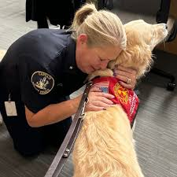
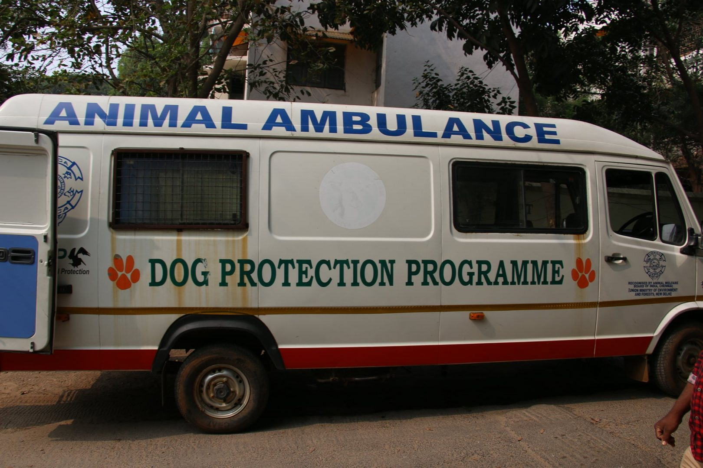
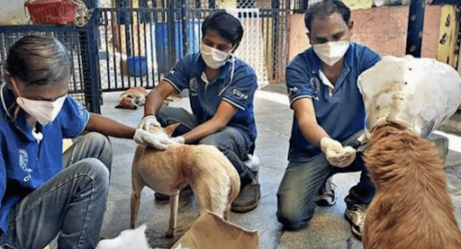
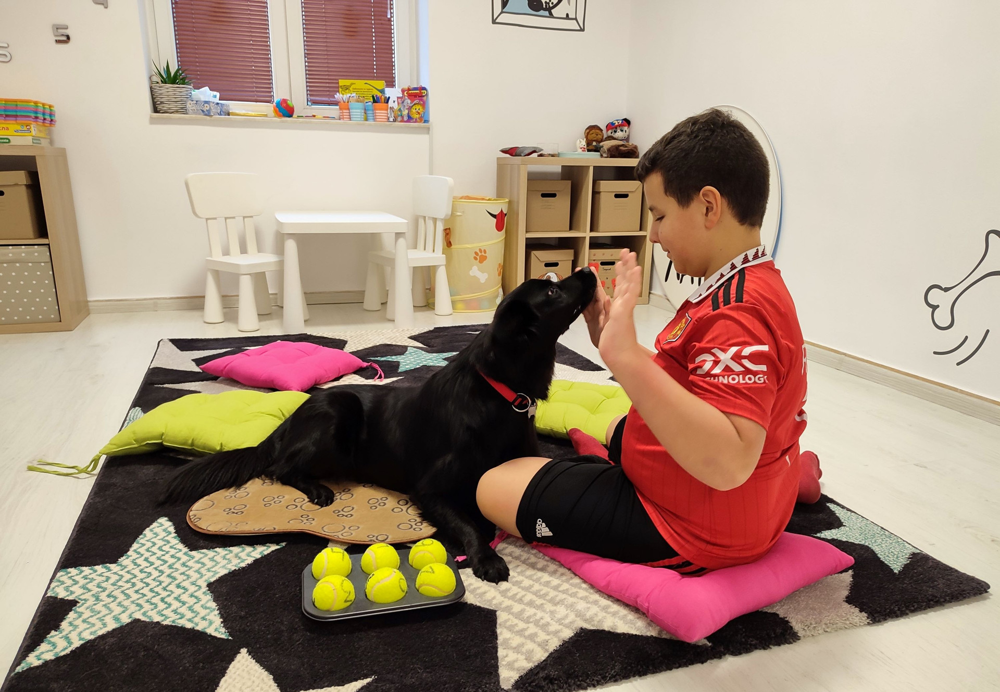
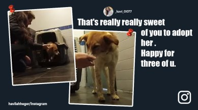
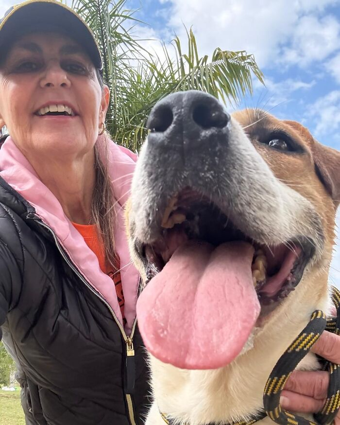

Every Rescue Has a Story
From fear to healing, and finally to love — witness the journey of a stray dog.
The Rescue – The First Contact

Gentle First Contact
Compassion begins with trust.

Safe Transport
From danger to safety.
The Recovery – The Healing

The Vet Check-Up
Professional care and compassion.

Foster Love & Comfort
Healing in a safe home.
The Adoption – A New Beginning

The Perfect Match
Finding a forever friend.

Happy Tails
A life filled with love.